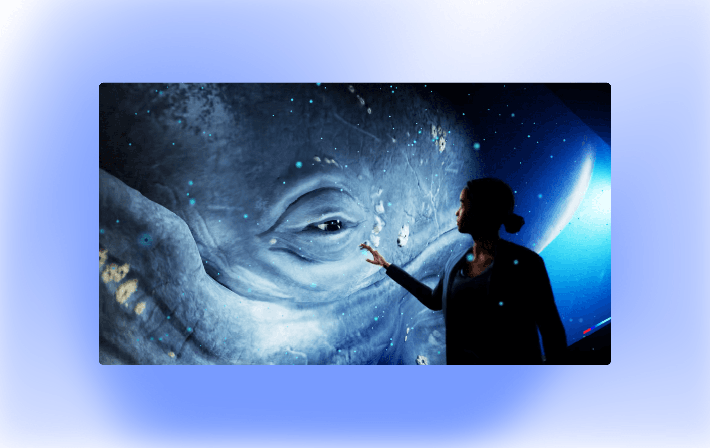

В Брисбене, Австралия, открылся Hologram Zoo — первый зоопарк, по которому вместо живых зверей ходят их голограммы. Проект создан австралийской компанией Axiom Holographics. По словам её директора Брюса Делла, Hologram Zoo даёт возможность переместиться туда, куда человек не может попасть в обычной жизни, и испытать то, чего раньше никогда не испытывал.
Здесь можно наблюдать тигров в процессе охоты, оказаться лицом к лицу с синим китом и даже увидеть динозавров, оставаясь в полной безопасности. Так зоопарк не только дарит своим гостям незабываемые впечатления, но и защищает реальных животных от суровых условий содержания и стресса от большого числа посетителей.
